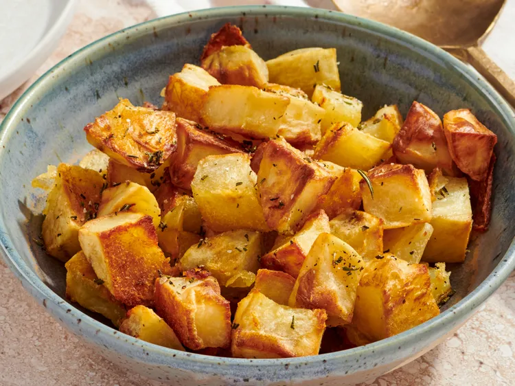

Extra Crispy Potatoes

What is Extra Crispy Potatoes
These Parmentier potatoes are classic French-style cubed roasted potatoes with herbs. They're crispy on the outside, pillowy and fluffy on the inside, and fragrant with rosemary and thyme.
Ingridients
- 2 tablespoons olive oil
- 2 pounds russet potatoes, peeled and cubed
- 2 cloves garlic, minced
- 1 tablespoon finely chopped fresh rosemary
- 1/2 teaspoon dried thyme
- kosher salt and freshly ground black pepper to taste
Steps :
- Line a rimmed baking sheet with non-stick aluminum foil. Add oil and swirl to coat. Place baking sheet in the oven and preheat to 400 degrees F (200 degrees C).
- Add potatoes to the preheated baking sheet and stir to coat with oil.
- Roast potatoes in the preheated oven for 20 minutes. Stir and roast for 20 minutes more.
- Meanwhile combine garlic, rosemary, thyme, salt, and pepper in a small bowl. Divide herb mixture on top of potatoes.
- Roast 5 minutes more. Serve immediately.
Home